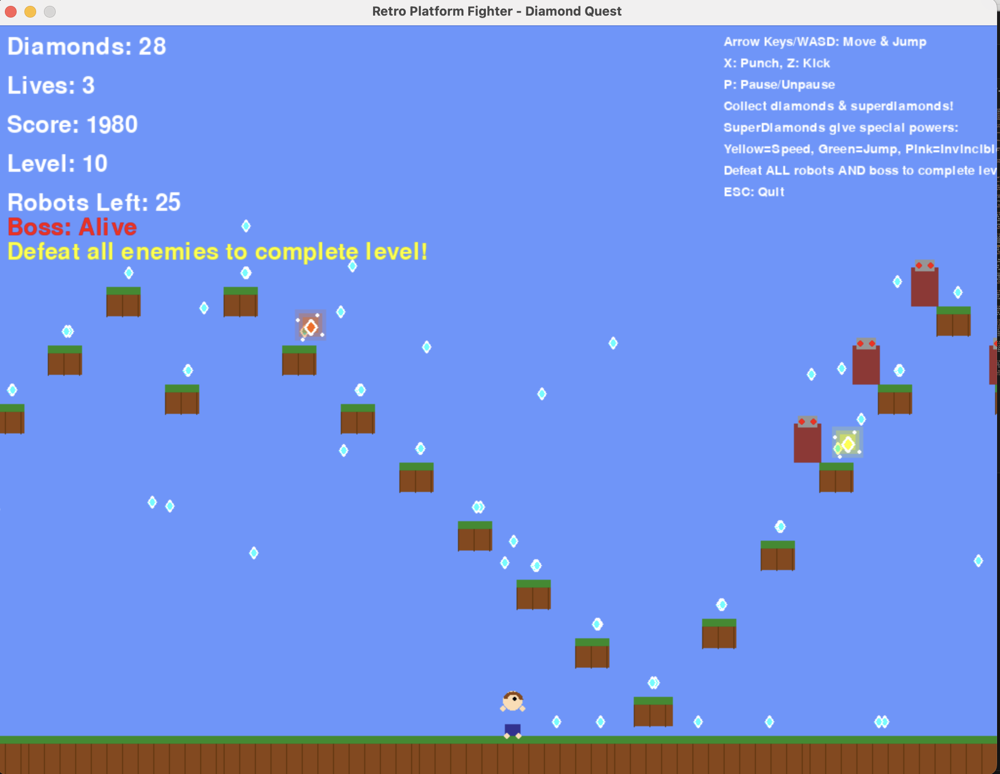

It all started with a challenge from the AWS Community: Build Games with Amazon Q CLI. This sparked an idea to conduct a simple experiment: How easily can kids build a game today? How much adult supervision would they need? And the ultimate question: could it be more exciting than Switch/Roblox?
My role in this adventure was simple: I'd be the tech support, setting up the environment, offering guidance on tools, and figuring out how to get the final creation online. The creative director, lead designer, and primary tester? A 9-year-old kid.

Phase 1: The First Spark of Creation
We started by getting the tools ready. I installed the Amazon Q CLI on Mac, asked it to create a conda environment and handed over the keyboard.
"Create a conda env"
With the environment active, it was time to bring the game idea to life. The initial concept was a classic platformer with a twist.
"Activate the conda env and create a platform retro game where you have to jump platforms and defeat evil robots by punching them, kicking them, jumping over them. The platform should have many small platforms, with dirt and grass on top. The player should look like a boy."
Amazon Q generated Python code using the Pygame library. In a surprisingly short time, we had... something! It was a game. But it wasn't quite right. The creative director had notes.
Phase 2: Iteration and Refinement
The first version was a great starting point, but the vision was much grander. The feedback was immediate and specific. We needed more gameplay mechanics and a clearer objective.
"The player is not looking like a boy. There is no option to kick or punch as it doesn't seem to have hand or legs. The player has to collect diamonds scattered around the map. Player loses 5 diamonds whenever it touches the robots and is not punching or kicking. Player loses a life if diamond count reaches zero."
Q took the feedback and started refactoring. The game was evolving right before our eyes. The next request was to expand the world and add a goal.
"The map should be bigger where the player can run through it. There should be a boss battle at the end of the map and every time player defeats the boss, the level gets harder and map changes. Lets have a total of five levels and three lives for the player."
At this point, we realized this was becoming a real project. It was time to introduce a crucial tool for any developer: version control. A quick lesson on Git was in order.
"Create a git repo, commit the changes and document the game"
Q not only initialized the repository but also generated a surprisingly thorough `README.md` file explaining the game. Now, back to the fun stuff.
You can follow our progress and see the final code on our GitHub repository.
The game was getting better, but needed more polish and... punch. Literally.
"Can you improve the player so that its kicks and punches are visible. Boss should come only at the end of the map. Add music with sounds when kicked, punched, jumped, life lost, diamond collected, diamond lost, etc."
With sound effects and better animations, it felt much more alive. But play-testing revealed some bugs and balancing issues.
"Player keeps going up when jumping on robots multiple times. Fix that. Boss is not fighting. Make him fight as well."
"Make sure all platforms can be reached"
With the core mechanics solid, it was time for some classic video game flair.
"Include superdiamonds that give you power ups such as invincibility, jump power and speed"
"Make the game harder"
And with that final prompt, the game looked fantastic. It was challenging, it was fun, and it was almost exactly what he had imagined.
Finally we asked it to include cheatcodes to switch to any level for testing.
"Include a cheatcode to start the game at any desired level"
The Kid's Corner: Unfiltered Reviews
"This thing is smartest ever."
"I want to make it different from other games - I do not want to get sued."
"The boss looks like a parent."
The Challenge of Sharing
The excitement was palpable. He really wanted to share the game with friends and family. This, it turned out, was harder than making the game itself. We explored a few options:
- Packaging with Pygbag: Our first thought was to package the Pygame project into WebAssembly (WASM). Unfortunately, this path was fraught with issues and didn't produce a playable result even though AI tried really hard.
- Creating a Django App: The next approach was to port the game to a Django web application. Amazon Q successfully created the Django project, created a basic version using APIs and we successfully hosted it. The web-specific features like a leaderboard, user login, and an admin dashboard worked surprisingly well. However, the core game had new bugs and AI couldn't fix the issues properly.
Lessons from this experiment
What We Loved ❤️
- A Window into AI "Thinking": Watching Q process the requests and generate thinking tokens helped us understand what was happening behind the scenes. It wasn't just magic; it was a process.
- Vision to Reality: The tool did a remarkable job of translating a child's imaginative description into actual, functional code.
- Excellent Documentation: The auto-generated documentation was a huge plus, teaching good habits from the start.
- Clean Code: Q handled code cleanup and refactoring beautifully, maintaining a clean codebase even after many iterative changes.
The Hurdles 🚧
- The Patience Test: Code generation takes quite a bit of time, the waiting was a challenge.
- Model Availability: We occasionally ran into messages about model unavailability and had to switch models to continue.
- Hitting the Quota: We were prolific! By the end of our creative spree, we had exhausted our monthly free quota. A testament to how much we used it - particularly the failed attempts in successfully hosting a playable version.
Next Steps and Final Thoughts
This was an incredible introduction foray into game development and the practical application of AI. Next, we will use a different tech stack, one more inherently suited for web and mobile deployment, like JavaScript with a library like Phaser. The goal remains the same: create, play, and share.
For now, check out a video of the final game in action below!
Game Video with level switching enabled.